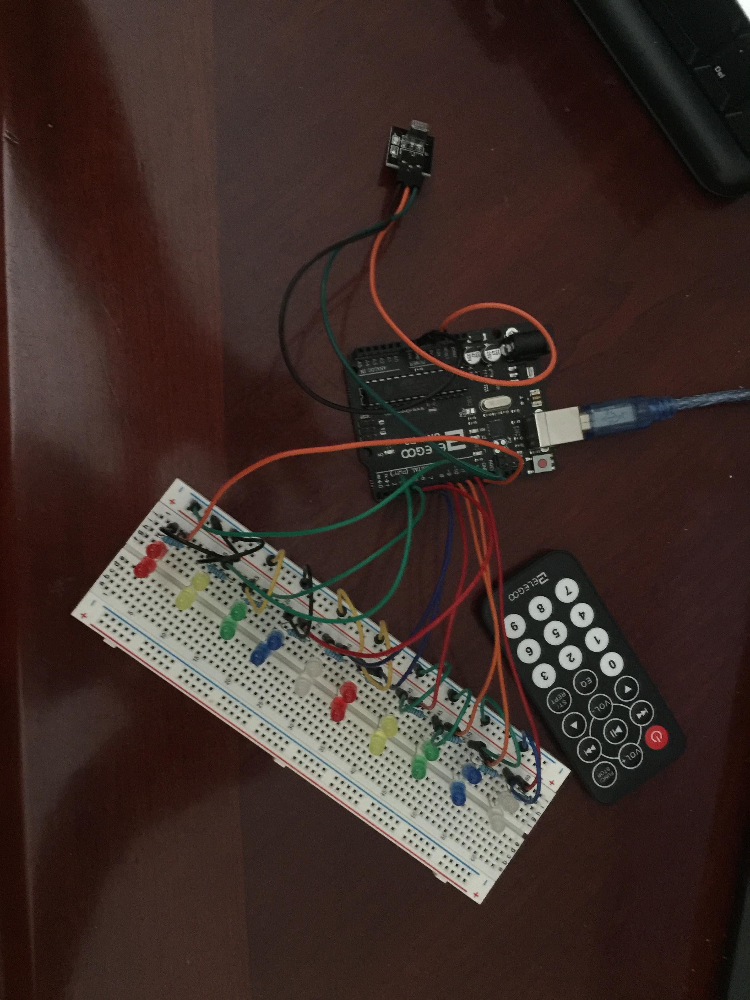
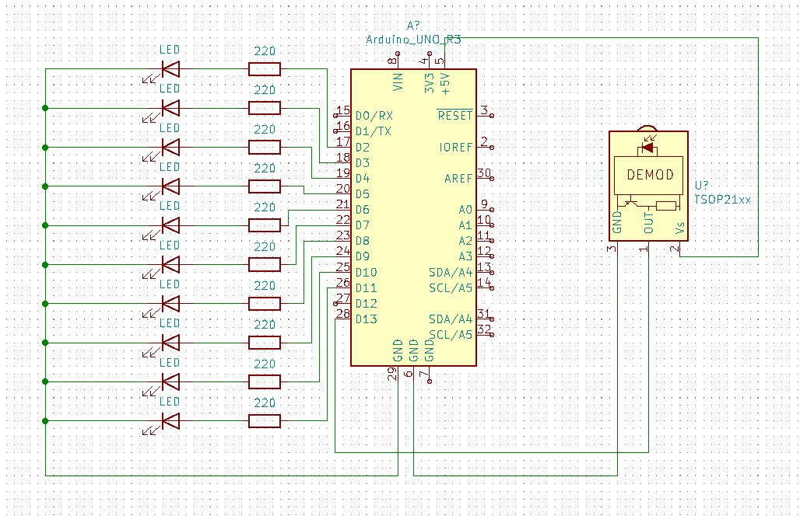

Hardware
My project revolves around controlling LEDs using an IR sensor and a remote control. In the below picture, the little black box sticking out is the IR sensor. By pressing the different buttons on the remote control, I can control which lights turn on or off. I also coded in extra features such as a shift and XOR (which turns on all the lights that were off and vice versa).
After building everything at a macro-level, I re-designed everything using Kicad to create my own PCB (printable controller board). The Kicad schematic can be seen below:
The little boxes that have 220 in them represents resistors of 220 \(\Omega\). The big box is the microcontroller labelled Arduino_UNO_R3, which is the CPU with storgae functions and inputs/outputs. By connecting all of the LEDs to the microcontroller, I am able to control each light individually. The video I made demonstrating the different features is shown below:
For reference, below is the code that I input into the microcontroller control the entire system.